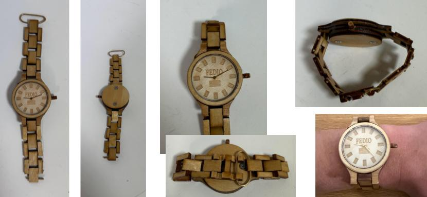
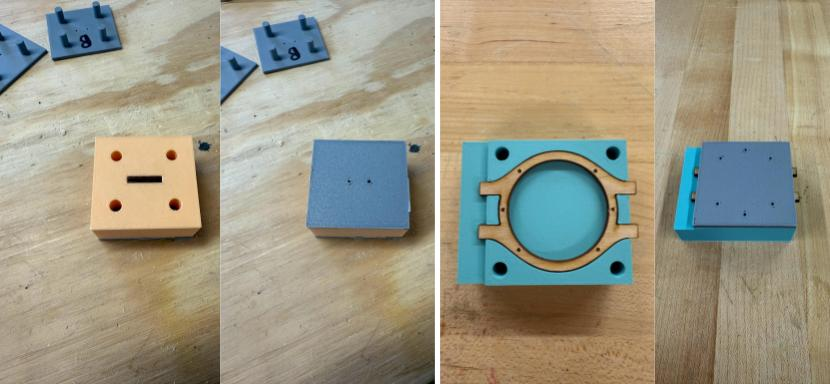
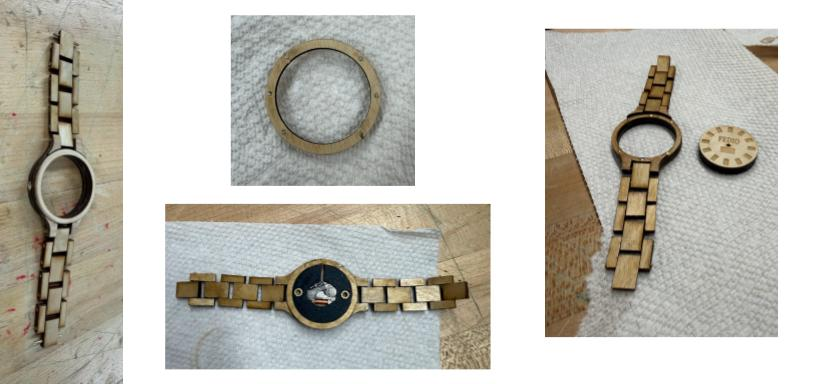
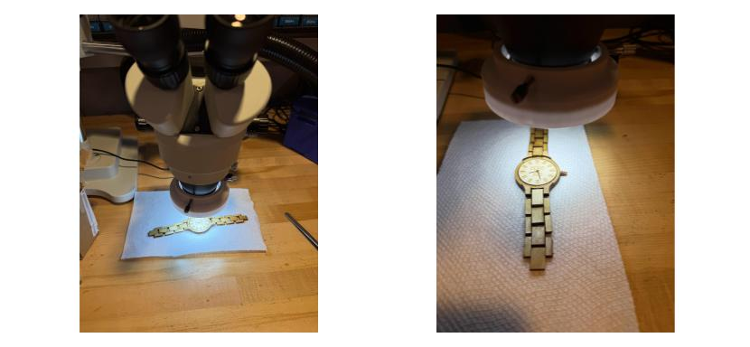

Wooden Wristwatch
Progress pictures and captions of what went into making my custom wristwatch
This project was completely for fun, and I put a lot of time into it. This is actually my second version of such a project because I had a lot of design issues to correct. My best estimates place the total work on this watch at around 100 hours with probably a 50/50 split of that on the design/CAD of the watch and actually building it. All together, I have 74 files on my computer that went into making this.

Finished Watch Pictures
These are pictures of the finished watch! You can see everything from the face, to the band, to the screws on the back, to how the clasp works. I cut and engraved the wood using a laser cutter at my school. In all, the watch is 11.7mm thick with a face diameter of 35mm and a case diameter of 42mm.

3D-Printed Drill Jigs
To make precise drill holes, I 3D-printed jigs that I could line up with a drill press. The two pictures on the left show the wood for a piece of the bracelet and then the 3D-printed top that shows me exactly where I needed to drill. The two pictures on the right are how I went about creating the holes for the magnets.

Main Components
These are the main pieces of the watch before they get assembled together.
On the left is the case of the watch without the center. Note the hole for crown, I used a drill jig for that too.
The top middle picture is the bottom of the top of the case; you can see the magnets that connect it to the rest of the case.
The bottom middle image is of the internals of the watch. I used a Miyota 203A movement and 3D-printed something to hold it securely. I superglued threaded inserts into this part too, which is where the screws in the bottom of the case screw into.

Attaching The Hands
I used a microscope at my school to make sure I was attaching the hands correctly. This step is by far the most stressful because I'm very inexperienced in the actual watch-assembly steps and it's really easy to screw something up.
I didn't take pictures of the tools used to put the hands on (documenting wasn't exactly at the forefront of my mind), but you essentially just press them on to the watch movement (much easier said than done, however).
Key Engineering Takeaways
- Problem-Solving: I had a lot of creative solutions to problems I encountered. Some examples are using the threaded inserts so the screws had something strong to screw into, all of the drill jigs I made, and using the very tiny magnets to attach the case top.
- Not Chasing Perfection: There's a saying I've read that roughly goes "if you want perfection, don't use wood." There are numerous imperfections in the watch (some due to it being made of wood, but many because my skills are far from perfect). You can probably spot some of them in the images, but a lot of them only I will notice because I know they're there. However, I'm okay with them, and I think they add some character to my watch. After all, if I wanted a perfect wooden watch, I could've bought one online. Instead, mine is 1 of 1!